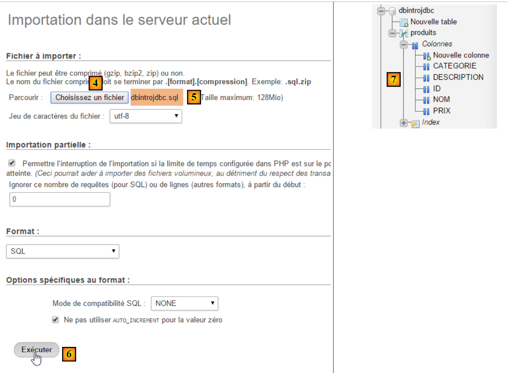
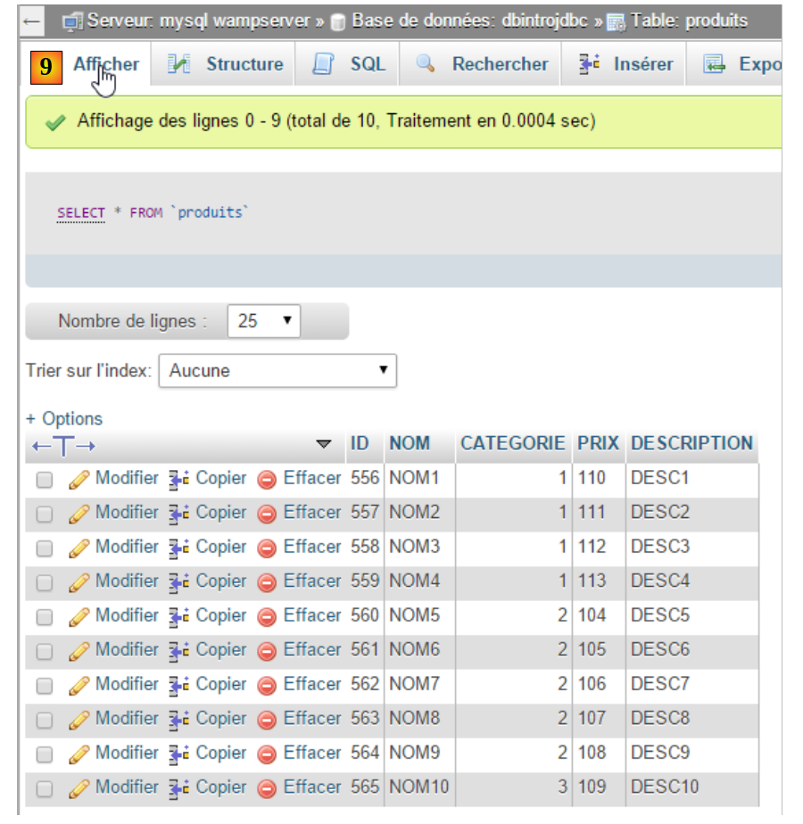

6. [Cours]：API 与 JDBC 简介
关键词：关系型数据库，API JDBC，SQLException。
6.1. Support
 |  |  |
文件夹 [support / chap-06] 包含本章的 Eclipse 项目。
6.2. Architecture
 |
JDBC 层（Java DataBase Connectivity）是一个通用的数据库访问接口。它始终向 [DAO] 层提供相同的接口。 如果更换 SGBD，只需更换驱动程序 JDBC。[DAO] 层保持不变。
6.3. 数据库操作步骤
 |
在上述架构中，控制台程序对数据库的操作包括以下步骤：
- 加载数据库驱动程序 JDBC；
- 建立与数据库的连接；
- 向数据库发出 SQL 命令，并处理 SQL 命令的结果；
- 关闭连接；
步骤 1 仅执行一次。步骤 2-4 需重复执行。请注意，我们不会让连接保持打开状态。一旦不再需要，就会立即关闭它。
6.3.1. 步骤 1 - 将驱动程序 JDBC 加载到内存中
代码
// 加载驱动程序 JDBC
try {
Class.forName(nom de la classe du pilote JDBC);
} catch (ClassNotFoundException e1) {
// 处理异常
}
第 3 行操作旨在将数据库中的驱动程序 JDBC 加载到内存中。此操作只需执行一次。但重复执行也不会导致错误。系统会在项目的类路径中查找驱动程序类 JDBC。 因此，在Eclipse项目中，必须将包含驱动程序类JDBC的[jar]文件添加到项目的Classpath中。
6.3.2. 步骤 2 - 建立连接
安装好 JDBC 驱动程序后，需要让其与 BD 建立连接：
代码
package spring.jdbc;
import java.sql.Connection;
import java.sql.DriverManager;
import java.sql.PreparedStatement;
import java.sql.ResultSet;
import java.sql.SQLException;
public class IntroJdbc01 {
...
Connection connexion = null;
PreparedStatement ps = null;
ResultSet rs = null;
try {
// 打开连接
connexion = DriverManager.getConnection(url, user, passwd);
...
} catch (SQLException e1) {
// 处理异常
...
} finally {
// 关闭连接
if (connexion != null) {
try {
connexion.close();
} catch (SQLException e2) {
// 处理异常
...
}
}
}
- 第 3-7 行：JDBC 接口的实现类均位于 [java.sql] 包中。 此外，一旦发生错误，它们都会抛出类型为 [SQLException] 的异常（第 19、27 行）。 该异常继承自 [Exception] 类，属于所谓的受控异常：必须使用 try/catch 语句进行处理；或者，若不进行处理，则需通过在方法签名中添加 [throws SQLException] 来表明该方法允许抛出异常；
- 第 17 行，[DriverManager.getConnection] 是一个静态方法，它期望三个参数：
- [url]：数据库中的 URL。这是一个字符串，其值取决于所使用的 BD。 对于 MySQL，其格式为 [jdbc:mysql://localhost:3306/nom_de_la_bd]；
- [user]：连接的所有者；
- [passwd]：其密码；
- 第24-30行：必须在[finally]子句中关闭连接，以确保无论是否发生异常，连接都会被关闭。
6.3.3. 步骤 3 - 发出命令 SQL [SELECT]
建立连接后，即可发出 SQL 命令。处理 [SELECT] 读取命令的方式与处理 [UPDATE, INSERT, DELETE] 更新操作的方式不同。 我们先从 SQL 和 [SELECT] 命令开始：
代码
Connection connexion = null;
PreparedStatement ps = null;
ResultSet rs = null;
try {
// 登录
connexion = DriverManager.getConnection(url, user, passwd);
// 开始交易
connexion.setAutoCommit(false);
// 只读模式
connexion.setReadOnly(true);
// 正在读取表 [PRODUITS]
ps = connexion.prepareStatement("SELECT ID, NOM, CATEGORIE, PRIX, DESCRIPTION FROM PRODUITS");
rs = ps.executeQuery();
System.out.println("Liste des produits : ");
while (rs.next()) {
System.out.println(new Produit(rs.getInt(1), rs.getString(2), rs.getInt(3), rs.getDouble(4), rs.getString(5)));
}
// 提交事务
connexion.commit();
} catch (SQLException e1) {
// 处理异常
doCatchException(connexion,e1);
} finally {
// 处理 finally 块
doFinally(rs, ps, connexion);
}
private void doFinally(ResultSet rs, PreparedStatement ps, Connection connexion) {
....
}
- 第 8、10 行：以只读模式（第 10 行）开启事务（第 8 行）。事务是一系列 SQL 命令，这些命令要么全部成功，要么全部失败。 因此，在包含 N 个 SQL 命令的事务中，如果第 I+1 个命令失败，则前面的 I 个命令将被撤销。对于读取操作，通常不需要事务。然而，创建一个只读事务可能使某些 SGBD 命令能够进行某些优化；
- 第12行：使用了一个[PreparedStatement]。通常，[PreparedStatement]的参数会用“？”表示。但此处没有。 [PreparedStatement]是由SGBD预编译的语句。该预编译过程会产生开销，且仅执行一次。随后，该预编译语句将由SGBD使用不同的实际参数执行，这些参数将替换形式参数“？”。 需注意，最好直接指定所需列名，而非使用 * 符号来获取所有列。通过明确列名，随后可根据其在 SELECT 查询中的位置获取其值；
- 第 13 行：执行 [PreparedStatement]。获取一个 [ResultSet] 类型的对象；
类型为 [ResultSet] 的对象代表一张表，即一组行和列。在某个时刻，我们只能访问表中的一行，称为当前行。在初始创建 [ResultSet] 时，不存在当前行。 必须执行 [ResultSet.next()] 操作才能获取它。next 方法的签名如下：
该方法尝试跳转到 [ResultSet] 的下一行，若成功则返回 true，否则返回 false。若操作成功，下一行将成为新的当前行。上一行将被丢失，且无法回溯以恢复该行。
[ResultSet]表包含名为labelCol1、labelCol2……的列，这些列在已执行的[SELECT]查询中已指定。使用以下查询：
SELECT ID as myId, NOM as myNom, CATEGORIE as myCategorie, PRIX as myPrix, DESCRIPTION as myDescription FROM PRODUITS
- [ID] 列将映射到 [ResultSet] 表中名为 [myId] 的列；
- [NOM] 列将映射到 [ResultSet] 表中名为 [myNom] 的列；
- ……
在上文中，标识符 [myCol] 被称为列标签。如果没有这些标签，[ResultSet] 的列名将取决于 SGBD。 当 [SELECT] 仅操作单张表时，列标签将默认采用 SELECT 所请求的列名。 问题出现在 [SELECT] 操作多个表时，且这些表中存在相同的列名，如下例所示：
SELECT PRODUITS.NOM, CATEGORIES.NOM FROM PRODUITS, CATEGORIES WHERE PRODUITS.CATEGORIE_ID=CATEGORIES.ID
假设表 [PRODUITS] 通过关系 [Produits] 与表 [CATEGORIES] 建立外键关联。CATEGORIE_ID --> [CATEGORIES]。ID，且表 [PRODUITS] 和 [CATEGORIES] 均包含字段 [NOM]。 在这种情况下，[ResultSet]中为[PRODUITS.NOM]和[CATEGORIES.NOM]列指定的名称取决于SGBD。 因此，为了实现与 SGBD 之间的可移植性，此处必须使用列标签，写法如下：
SELECT PRODUITS.NOM as p_NOM, CATEGORIES.NOM as c_NOM FROM PRODUITS, CATEGORIES WHERE PRODUITS.CATEGORIE_ID=CATEGORIES.ID
要利用 [ResultSet] 当前行的各个字段，可使用以下方法：
用于获取当前行中名为“labelColi”的列，即 [SELECT] 中具有该标签的列。Type 表示字段 coli 的类型。 可以使用以下 [getType] 方法：getInt、getLong、getString、 getDouble、getFloat、getDate、…… 除了使用列名，还可以使用该列在已执行的 [SELECT] 查询中的位置：
其中 i 是所需列的索引（i>=1）。
- 第 15-17 行：获取 BD 中读取的值；
- 第 19 行：事务被提交（也称为“commit”）。这将结束事务，并释放 SGBD 为该事务调用的资源；
- 第 25 行：在 [finally] 中释放资源。该程序调用后续的 [doFinally] 方法：
private void doFinally(ResultSet rs, PreparedStatement ps, Connection connexion) {
// 关闭 ResultSet
if (rs != null) {
try {
rs.close();
} catch (SQLException e1) {
}
}
// 关闭 [PreparedStatement]
if (ps != null) {
try {
ps.close();
} catch (SQLException e2) {
}
}
if (connexion != null) {
try {
// 关闭连接
connexion.close();
} catch (SQLException e3) {
// 处理异常
}
}
}
- 第3-9行：关闭[ResultSet]；
- 第11-17行：关闭[PreparedStatement]；
- 第 18-27 行：关闭连接；
第3-17行的关闭操作似乎有些多余，因为第18-25行已经关闭了连接。实际上，在某些情况下并非如此，建议保留这些操作。
- 第22行：该异常由以下方法处理：
private static void doCatchException(Connection connexion, Throwable th) {
// 撤销事务
try {
if (connexion != null) {
connexion.rollback();
}
} catch (SQLException e2) {
// 处理异常
}
}
- 第4-6行：事务被回滚。这将终止事务，SGBD 方法将能够释放为该事务调用的资源；
6.3.4. 步骤 3 - 发出 SQL 和 [INSERT, UPDATE, DELETE] 命令
SQL 和 [INSERT, UPDATE, DELETE] 命令属于更新操作：它们会修改数据库，但不会返回任何行。唯一返回的信息是受更新操作影响的行数。
代码
Connection connexion = null;
PreparedStatement ps = null;
try {
// 建立连接
connexion = DriverManager.getConnection(url, user, passwd);
// 开始事务
connexion.setAutoCommit(false);
// 读写模式
connexion.setReadOnly(false);
// 更新表
ps = connexion.prepareStatement("UPDATE PRODUITS SET PRIX=PRIX*1.1 WHERE CATEGORIE=?");
// 类别 1
ps.setInt(1, 10);
// 执行
int nbLignes=ps.executeUpdate();
// 提交事务
connexion.commit();
} catch (SQLException e1) {
// 处理异常
doCatchException(connexion, e1);
} finally {
// 处理 finally 块
doFinally(null, ps, connexion);
}
}
- 第 9 行：连接用于读写；
- 第 11 行：一个 [PreparedStatement] 调用，带 1 个参数（用 ? 表示）。参数可以有多个，从 1 开始编号；
- 第13行：将值赋给该唯一参数。[setType]中的第一个参数是该参数在[PreparedStatement]中的位置（1、2、...），第二个参数则是其被赋予的值。 可以使用方法 [setInt, setLong, setFloat, setDouble, setString, setDate, ...]；
- 第 15 行：应使用方法 [executeUpdate]，而非仅用于 SELECT 命令的 [executeQuery]。该方法返回受此操作影响的行数。可能为 0。
- 第 17 行：事务已提交；
6.3.5. 步骤 4 - 关闭连接
在多用户环境中，应尽快关闭连接，因为 SGBD 仅支持有限数量的打开连接。 在前面的示例中，连接是在 SQL 操作的 [finally] 子句中关闭的，以确保无论是否发生异常，连接都会被关闭。
6.4. 一个示例项目
6.4.1. 支持
 |
文件夹 [support / chap5] 包含本章的 Eclipse 项目 [1, 2]。 文件夹 [database] 包含脚本 SQL，用于创建本章的示例数据库 MySQL [1, 3]。
6.4.2. 使用的数据库
以下示例使用以下 MySQL 数据库：
 |
- [ID]：主键，采用 AUTO_INCREMENT 模式（若未指定主键，则由 SGBD 自动生成）；
- [NOM]：产品名称——唯一；
- [CATEGORIE]：其类别编号；
- [PRIX]：其价格；
- [DESCRIPTION]：产品描述；
我们将使用工具 [WampServer] 按以下方式创建它：[1-9]：
 |
 |
 |
 |
6.4.3. Eclipse 项目
 |
该项目是一个由以下文件 [pom.xml] 定义的 Maven 项目：
<project xmlns="http://maven.apache.org/POM/4.0.0" xmlns:xsi="http://www.w3.org/2001/XMLSchema-instance"
xsi:schemaLocation="http://maven.apache.org/POM/4.0.0 http://maven.apache.org/xsd/maven-4.0.0.xsd">
<modelVersion>4.0.0</modelVersion>
<groupId>istia.st.jdbc</groupId>
<artifactId>intro-jdbc-01</artifactId>
<version>0.0.1-SNAPSHOT</version>
<dependencies>
<dependency>
<groupId>mysql</groupId>
<artifactId>mysql-connector-java</artifactId>
<version>5.1.34</version>
</dependency>
<dependency>
<groupId>com.fasterxml.jackson.core</groupId>
<artifactId>jackson-databind</artifactId>
<version>2.5.1</version>
</dependency>
</dependencies>
</project>
- 第 8-12 行：SGBD 的 JDBC 驱动程序；
- 第13-17行：一个能够处理jSON（JavaScript对象表示法）的库（参见第22.6节）。我们将使用它以jSON格式显示数据库中的产品；
6.4.4. 产品类
[Produit]类定义如下：
package istia.st.jdbc;
import com.fasterxml.jackson.core.JsonProcessingException;
import com.fasterxml.jackson.databind.ObjectMapper;
public class Produit {
// 字段
private int id;
private String nom;
private int categorie;
private double prix;
private String description;
// 构造函数
public Produit() {
}
public Produit(int id, String nom, int categorie, double prix, String description) {
this.id = id;
this.nom = nom;
this.categorie = categorie;
this.prix = prix;
this.description = description;
}
// getter 和 setter
...
// 转为字符串
public String toString() {
try {
return new ObjectMapper().writeValueAsString(this);
} catch (JsonProcessingException e) {
e.printStackTrace();
return null;
}
}
}
- 第 34 行：使用库 jSON 来显示产品的字符串 jSON。显示效果如下所示：
Liste des produits :
{"id":1,"nom":"NOM1","categorie":1,"prix":100.0,"description":"DESC1"}
{"id":2,"nom":"NOM2","categorie":1,"prix":101.0,"description":"DESC2"}
上述方法 [toString] 的优势在于：即使向类中添加或移除字段，其方法 [toString] 仍然有效。 此外，如果字段本身是对象（列表、数组、字典、用户对象），jSON库能够将其转换为字符串jSON；
6.4.5. [Static] 类
[Static] 类将主类中常用代码整合为方法：
package istia.st.jdbc;
import java.util.ArrayList;
import java.util.List;
public class Static {
public static List<String> getErreursFromThrowable(Throwable th) {
// 获取异常的错误消息列表
List<String> erreurs = new ArrayList<String>();
while (th != null) {
// 抛出对象的错误消息
erreurs.add(th.getMessage());
// 转到可抛异常的起因
th = th.getCause();
}
// 结果
return erreurs;
}
public static void show(String title, List<String> messages){
// 标题
System.out.println(String.format("%s : ",title));
// 消息
for(String message : messages){
System.out.println(String.format("- %s",message));
}
}
}
- 第 8-19 行：用于获取封装在 [Throwable] 类型对象中的错误列表，该对象是 [Exception] 类的父类；
- 第21-28行：在屏幕上显示一条消息列表；
该代码本可置于主类中，因为目前仅此类使用它。但在此我们考虑更广泛的情况，即其他类可能也需要此代码。
6.4.6. 主类的框架
package istia.st.jdbc;
import java.sql.Connection;
import java.sql.DriverManager;
import java.sql.PreparedStatement;
import java.sql.ResultSet;
import java.sql.SQLException;
public class IntroJdbc01 {
// 常量
final static String url = "jdbc:mysql://localhost:3306/dbIntroJdbc";
final static String user = "root";
final static String passwd = "";
final static String insert = "INSERT INTO PRODUITS(ID, NOM, CATEGORIE, PRIX, DESCRIPTION) VALUES (?, ?, ?, ?, ?)";
final static String delete = "DELETE FROM PRODUITS";
final static String select = "SELECT ID, NOM, CATEGORIE, PRIX, DESCRIPTION FROM PRODUITS";
final static String update = "UPDATE PRODUITS SET PRIX=PRIX*1.1 WHERE CATEGORIE=?";
final static String insert2 = "INSERT INTO PRODUITS(ID, NOM, CATEGORIE, PRIX, DESCRIPTION) VALUES (100,'X',1,1,'x')";
public static void main(String[] args) {
// 加载驱动程序 JDBC 来自 MySQL
try {
Class.forName("com.mysql.jdbc.Driver");
} catch (ClassNotFoundException e1) {
doCatchException("Pilote JDBC introuvable", null, e1);
return;
}
// 清空表 [PRODUITS]
delete();
// 填充该表
insert();
// 读取该表
select();
// 更新
update();
// 显示
select();
// 插入两个相同元素
// 插入操作应失败，且由于事务原因，两个元素均未被插入
insert2();
// 正在验证
select();
// 完成
System.out.println("Travail terminé");
}
// 产品列表
private static void select() {
...
}
// 删除产品
public static void delete() {
...
}
// 添加产品
public static void insert() {
...
}
// 添加2个产品
public static void insert2() {
...
}
// 更新部分产品
public static void update() {
..
}
private static void doFinally(ResultSet rs, PreparedStatement ps, Connection connexion) {
// 关闭ResultSet
if (rs != null) {
try {
rs.close();
} catch (SQLException e1) {
}
}
// 关闭[PreparedStatement]
if (ps != null) {
try {
ps.close();
} catch (SQLException e2) {
}
}
// 关闭连接
if (connexion != null) {
try {
connexion.close();
} catch (SQLException e3) {
// 显示错误信息
Static.show("Les erreurs suivantes se sont produites lors de la fermeture de la connexion",
Static.getErreursFromThrowable(e3));
}
}
}
private static void doCatchException(String title, Connection connexion, Throwable th) {
// 显示错误信息
Static.show(title, Static.getErreursFromThrowable(th));
// 取消交易
try {
if (connexion != null) {
connexion.rollback();
}
} catch (SQLException e2) {
// 显示错误信息
Static.show(title, Static.getErreursFromThrowable(e2));
}
}
}
6.4.7. 清空产品表的内容
方法 [delete] 用于清空表中的内容：
// 删除产品
public static void delete() {
Connection connexion = null;
PreparedStatement ps = null;
try {
// 建立连接
connexion = DriverManager.getConnection(url, user, passwd);
// 开始事务
connexion.setAutoCommit(false);
// 清空表 [PRODUITS]
ps = connexion.prepareStatement(delete);
ps.executeUpdate();
// 提交事务
connexion.commit();
// 返回默认模式
connexion.setAutoCommit(true);
} catch (SQLException e1) {
// 处理异常
doCatchException("Les erreurs suivantes se sont produites à la suppression du contenu de la table", connexion, e1);
} finally {
// 处理 finally 代码块
doFinally(null, null, connexion);
}
}
此示例使用事务。事务可将 SQL 命令进行分组，这些命令必须全部成功或全部取消。需要了解四项操作：
- 开始事务：[connexion.setAutoCommit(false)]；
- 交易成功结束：[connexion.commit()]。在此情况下，该交易中针对BD执行的所有操作均被确认；
- 交易失败结束：[connexion.rollback()]。在此情况下，该交易中针对 BD 执行的所有操作均被撤销；
- 返回 [auto-commit] 模式（即 API 的默认模式）：JDBC：[connexion.setAutoCommit(true)]。 在此模式下，每个 SQL 命令都会触发一次事务。因此，如果执行两次插入操作，其中第二次失败：
- 在 [AutoCommit=true] 模式下，第一个插入操作保留（它已被第一个 AutoCommit 确认）；
- 在 [AutoCommit=false] 模式下，第一次插入操作会被回滚；
在我们的示例中，每当发生异常时，我们都会在 [doCatchException] 方法中回滚事务：
private static void doCatchException(String title, Connection connexion, Throwable th) {
// 显示错误消息
Static.show(title, Static.getErreursFromThrowable(th));
// 回滚事务
try {
if (connexion != null) {
connexion.rollback();
}
} catch (SQLException e2) {
// 显示错误信息
Static.show("Erreur lors de l'annulation de la transaction", Static.getErreursFromThrowable(e2));
}
}
6.4.8. 创建产品表的内容
方法 [insert] 创建表内容：
// 添加产品
public static void insert() {
Connection connexion = null;
PreparedStatement ps = null;
try {
// 建立连接
connexion = DriverManager.getConnection(url, user, passwd);
// 开始事务
connexion.setAutoCommit(false);
// 填充表
ps = connexion.prepareStatement(insert);
for (int i = 0; i < 10; i++) {
// 准备
int n = i + 1;
ps.setInt(1, n);
ps.setString(2, String.format("NOM%s", n));
ps.setInt(3, n / 5 + 1);
ps.setDouble(4, 100 * (1 + (double) i / 100));
ps.setString(5, String.format("DESC%s", n));
// 执行
ps.executeUpdate();
}
// 提交事务
connexion.commit();
// 返回默认模式
connexion.setAutoCommit(true);
} catch (SQLException e1) {
// 处理异常
doCatchException("Les erreurs suivantes se sont produites à la création du contenu de la table", connexion, e1);
} finally {
// 处理 finally 代码块
doFinally(null, null, connexion);
}
}
6.4.9. 显示产品表的内容
方法 [select] 显示表内容：
// 产品列表
private static void select() {
Connection connexion = null;
PreparedStatement ps = null;
ResultSet rs = null;
try {
// 建立连接
connexion = DriverManager.getConnection(url, user, passwd);
// 开始事务
connexion.setAutoCommit(false);
// 读取表 [PRODUITS]
ps = connexion.prepareStatement(select);
rs = ps.executeQuery();
System.out.println("Liste des produits : ");
while (rs.next()) {
System.out.println(new Produit(rs.getInt(1), rs.getString(2), rs.getInt(3), rs.getDouble(4), rs.getString(5)));
}
// 提交事务
connexion.commit();
// 返回默认模式
connexion.setAutoCommit(true);
} catch (SQLException e1) {
// 处理异常
doCatchException("Les erreurs suivantes se sont produites à la lecture de la table", connexion, e1);
} finally {
// 处理 finally 块
doFinally(null, null, connexion);
}
}
6.4.10. 更新表内容
方法 [update] 更新某些产品：
// 更新某些产品
public static void update() {
Connection connexion = null;
PreparedStatement ps = null;
try {
// 建立连接
connexion = DriverManager.getConnection(url, user, passwd);
// 交易开始
connexion.setAutoCommit(false);
// 更新表
ps = connexion.prepareStatement(update);
// 类别 1
ps.setInt(1, 1);
// 执行
ps.executeUpdate();
// 提交事务
connexion.commit();
// 返回默认模式
connexion.setAutoCommit(true);
} catch (SQLException e1) {
// 处理异常
doCatchException("Les erreurs suivantes se sont produites à la mise à jour du contenu de la table", connexion, e1);
} finally {
// 处理 finally 代码块
doFinally(null, null, connexion);
}
}
6.4.11. 事务的作用
方法 [insert2] 试图将两个具有相同主键的产品插入表中，这是不允许的。由于处于事务中，第一次插入操作将被回滚。
// 添加 2 个主键相 同的产品
public static void insert2() {
Connection connexion = null;
PreparedStatement ps = null;
try {
// 建立连接
connexion = DriverManager.getConnection(url, user, passwd);
// 开始事务
connexion.setAutoCommit(false);
// 添加 1 行
ps = connexion.prepareStatement(insert2);
// 执行
ps.executeUpdate();
// 再次插入同一行，因此主键相同
// 插入操作应失败，且由于事务限制，两条记录均不会被插入
ps.executeUpdate();
// 提交事务
connexion.commit();
// 返回默认模式
connexion.setAutoCommit(true);
} catch (SQLException e1) {
// 处理异常
doCatchException("Les erreurs suivantes se sont produites lors de l'ajout", connexion, e1);
} finally {
// 处理 finally 块
doFinally(null, null, connexion);
}
}
6.4.12. 结果
执行方法 [main] 后的结果如下：
6.5. 使用 [DataSource] 类型的数据源
我们将使用类型为 [javax.sql.DataSource] 的数据源重现前面的应用程序：

我们将使用由类 [org.apache.tomcat.jdbc.pool.DataSource] 实现的数据源。该类使用连接池，即一组已打开的连接：
- 当连接池被实例化时，会与数据库建立一定数量的连接。该数量可配置；
- 当Java代码建立连接时，该连接由连接池提供；
- 当 Java 代码关闭连接时，该连接将归还给连接池；
最终，连接仅需建立一次，从而提升了数据库访问性能。数据源将在一个 Spring 配置类中定义
6.5.1. Eclipse 项目
 |
该项目是一个由以下文件 [pom.xml] 定义的 Maven 项目：
<project xmlns="http://maven.apache.org/POM/4.0.0" xmlns:xsi="http://www.w3.org/2001/XMLSchema-instance"
xsi:schemaLocation="http://maven.apache.org/POM/4.0.0 http://maven.apache.org/xsd/maven-4.0.0.xsd">
<modelVersion>4.0.0</modelVersion>
<groupId>istia.st.jdbc</groupId>
<artifactId>intro-jdbc-02</artifactId>
<version>0.0.1-SNAPSHOT</version>
<dependencies>
<!-- MySQL -->
<dependency>
<groupId>mysql</groupId>
<artifactId>mysql-connector-java</artifactId>
<version>5.1.34</version>
</dependency>
<!-- 库 jSON -->
<dependency>
<groupId>com.fasterxml.jackson.core</groupId>
<artifactId>jackson-databind</artifactId>
<version>2.5.1</version>
</dependency>
<!-- Spring -->
<dependency>
<groupId>org.springframework</groupId>
<artifactId>spring-context</artifactId>
<version>4.1.3.RELEASE</version>
</dependency>
<!-- Tomcat Jdbc -->
<dependency>
<groupId>org.apache.tomcat</groupId>
<artifactId>tomcat-jdbc</artifactId>
<version>8.0.20</version>
</dependency>
</dependencies>
</project>
- 第 21-25 行：对 Spring 的依赖；
- 第 27-31 行：对提供数据源的库的依赖；
Spring 配置类 [AppConfig] 如下：
package istia.st.jdbc;
import org.apache.tomcat.jdbc.pool.DataSource;
import org.springframework.context.annotation.Bean;
import org.springframework.context.annotation.Configuration;
@Configuration
public class AppConfig {
// 常量
final static String URL = "jdbc:mysql://localhost:3306/dbIntroJdbc";
final static String USER = "root";
final static String PASSWD = "";
final static String INSERT = "INSERT INTO PRODUITS(ID, NOM, CATEGORIE, PRIX, DESCRIPTION) VALUES (?, ?, ?, ?, ?)";
final static String DELETE = "DELETE FROM PRODUITS";
final static String SELECT = "SELECT ID, NOM, CATEGORIE, PRIX, DESCRIPTION FROM PRODUITS";
final static String UPDATE = "UPDATE PRODUITS SET PRIX=PRIX*1.1 WHERE CATEGORIE=?";
final static String INSERT2 = "INSERT INTO PRODUITS(ID, NOM, CATEGORIE, PRIX, DESCRIPTION) VALUES (100,'X',1,1,'x')";
final static String DRIVER_CLASSNAME = "com.mysql.jdbc.Driver";
@Bean
public DataSource dataSource() {
// 数据源 TomcatJdbc
DataSource dataSource = new DataSource();
// 访问配置JDBC
dataSource.setDriverClassName(DRIVER_CLASSNAME);
dataSource.setUsername(USER);
dataSource.setPassword(PASSWD);
dataSource.setUrl(URL);
// 初始打开的连接
dataSource.setInitialSize(1);
// 结果
return dataSource;
}
}
- 第 11-19 行：先前在 [IntroJdbc01] 中定义的常量已迁移至 [AppConfig]；
- 第 31-34 行：定义数据源的 Spring Bean；
- 第 24 行：创建尚未配置的数据源；
- 第26-29行：用于数据源连接数据库的信息；
- 第 31 行：创建一个包含 1 个连接的连接池。此处无需更多连接，因为从未发生过多个连接同时存在的情况；
6.5.2. 主类
主类 [IntroJdbc02] 如下所示：
package istia.st.jdbc;
import java.sql.Connection;
import java.sql.PreparedStatement;
import java.sql.ResultSet;
import java.sql.SQLException;
import javax.sql.DataSource;
import org.springframework.context.annotation.AnnotationConfigApplicationContext;
public class IntroJdbc02 {
// 数据源
private static DataSource dataSource;
public static void main(String[] args) {
// 获取 Spring 上下文
AnnotationConfigApplicationContext ctx = new AnnotationConfigApplicationContext(AppConfig.class);
// 获取数据源
dataSource = ctx.getBean(DataSource.class);
// 清空表 [PRODUITS]
delete();
...
// 完成
ctx.close();
System.out.println("Travail terminé");
}
// 产品列表
private static void select() {
Connection connexion = null;
PreparedStatement ps = null;
ResultSet rs = null;
try {
// 建立连接
connexion = dataSource.getConnection();
// 开始事务
connexion.setAutoCommit(false);
...
} catch (SQLException e1) {
// 处理异常
doCatchException("Les erreurs suivantes se sont produites à la lecture de la table", connexion, e1);
} finally {
// 处理 finally 代码块
doFinally(null, null, connexion);
}
}
...
}
- 第14行：数据源。请注意，其类型为[javax.sql.DataSource]，这是一个接口；
- 第 18 行：Spring 对象的实例化；
- 第 20 行：获取数据源的引用。需要注意的是，代码中从未直接提及实际使用的类。因此，此处没有任何迹象表明使用了 [TomcatJdbc] 的实现；
- 第 36 行：获取已打开的连接；
- 其余代码与类 [IntroJdbc01] 的代码完全相同；
6.6. Conclusion
有关数据库管理的更多信息，请参阅文档 [Exploiter une base relationnelle avec l'écosystème Spring]。